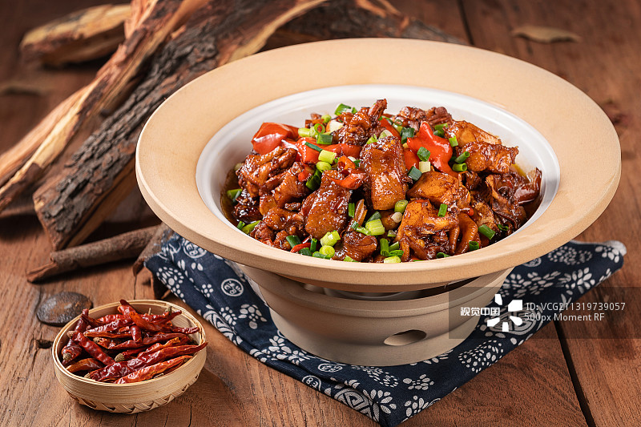
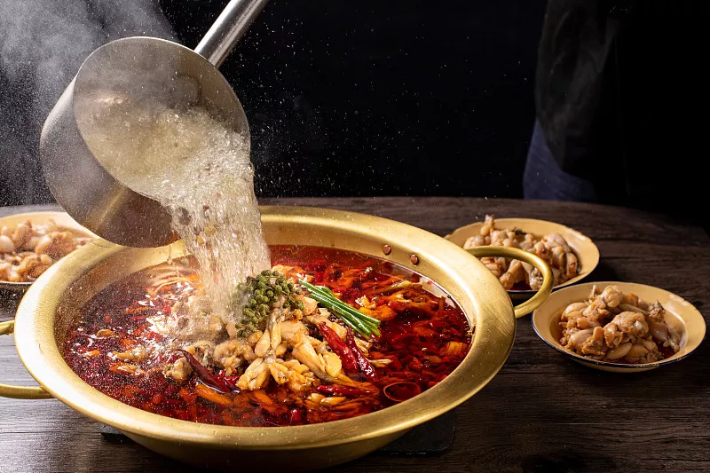
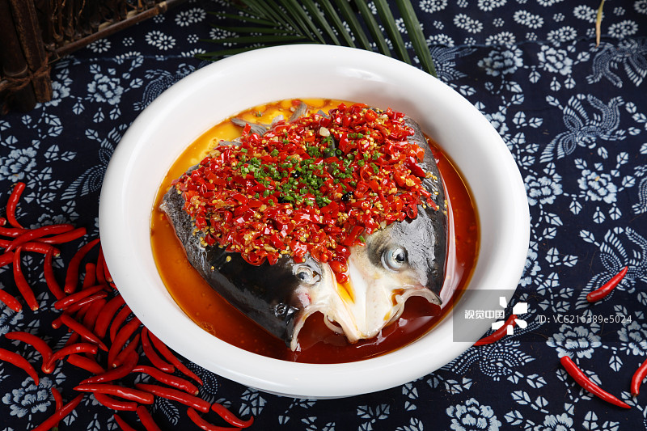
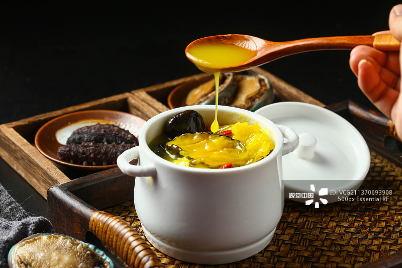

中餐味道
首页
菜系
川菜
赣菜
湘菜
闽菜
介绍
联系我们
赣菜（又称江西菜）历史悠久，底蕴深厚，是在继承历代“文人菜”基础上发展而成的乡土味极浓的“家乡菜”，深度契合中华优秀传统文化和合之道。 赣菜的主要风味特色是：原汁原味，油厚不腻，口味浓厚，咸鲜兼辣。甚至被称为“第九大菜系”。赣菜不断与天时气候、地理环境、风俗习惯、养生理念等融合，形成了“鲜辣香醇、味和天下”的特色。


川菜是中国汉族传统的四大菜系之一、中国八大菜系之一。川菜有着本土川菜与海派川菜之分，本土川菜中，四川菜系又包括川味菜肴、面点小吃、火锅等。川菜以取材广泛，调味多变，菜式多样，口味清鲜，醇浓并重，以善用麻辣调味著称，并以别具一格的烹调方法和浓郁的地方风味闻名，融会了东南西北各方的特点，博采众家之长，善于吸收和创新。
湘菜，又叫湖南菜，是中国历史悠久的汉族八大菜系之一 [1] ，早在汉朝就已经形成菜系。以湘江流域、洞庭湖区和湘西山区三种地方风味为主。 [1] 湘菜制作精细，用料上比较广泛，口味多变，品种繁多；色泽上油重色浓，讲求实惠；品味上注重香辣、香鲜、软嫩；制法上以煨、炖、腊、蒸、炒诸法见称。


闽菜是中国八大菜系之一，历经中原汉族文化和闽越族文化的混合而形成。发源于福州，以福州菜为基础，后又融合闽东、闽南、闽西、闽北、莆仙五地风味菜形成的菜系。狭义闽菜指以福州菜，最早起源于福建福州闽县，后来发展成福州、闽南、闽西三种流派,即广义闽菜。闽菜以口味清鲜、和醇、荤香、多汤为主，擅红糟、糖醋调味。